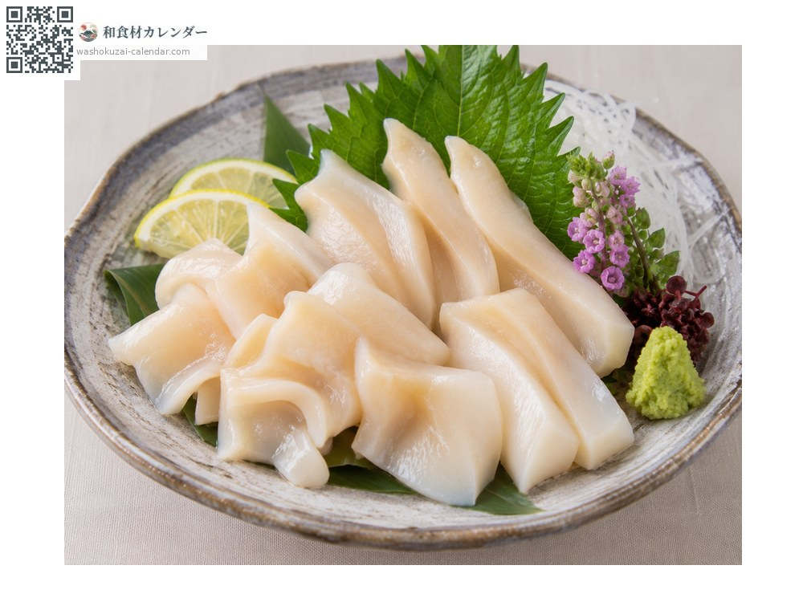
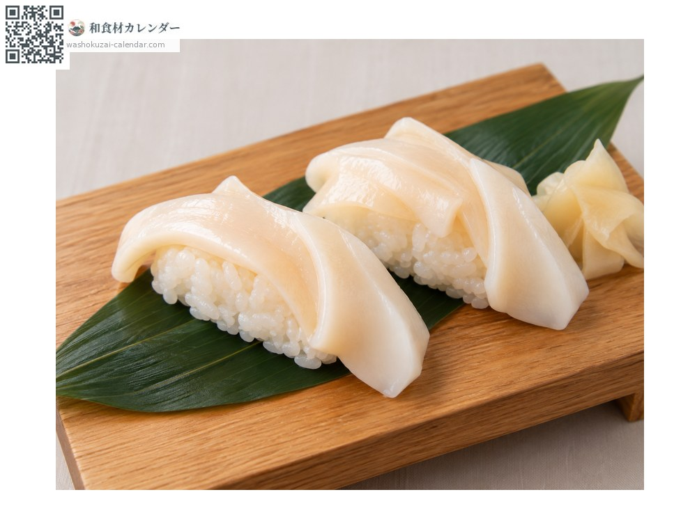
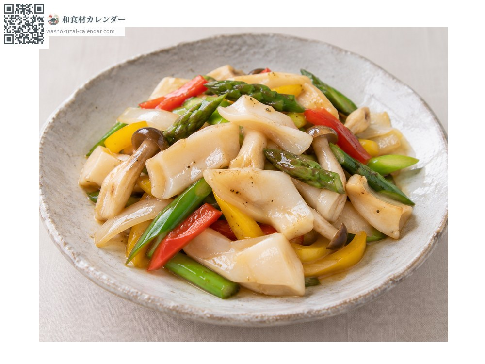

Seafood
Japanese geoduck
シロミル貝 しろみるがい shiromirugai
Also known asshiromirugai, namigai
At its best in May, Jun, Jul, Aug

When it is at its best
Jan
Feb
Mar
Apr
May
Jun
Jul
Aug
Sep
Oct
Nov
Dec
In seasonAvailable
How to cook

Sashimi
Scalded and peeled. A texture close to true geoduck, with a sweetness of its own.

Sushi
Used as a topping for nigiri, and easier to obtain than true geoduck.

Stir-fried
Cooked briefly. Chinese-style seasoning suits it too.
How to choose
A thick, white siphon. The part protruding from the shell should feel firm.
Storage
Scald, peel and refrigerate. Use within one or two days.
Main areas
Good to know
Its formal name is namigai. It circulates as a substitute for true geoduck but is a different species, and costs considerably less. The white siphon gives it the name shiro-miru, white miru.